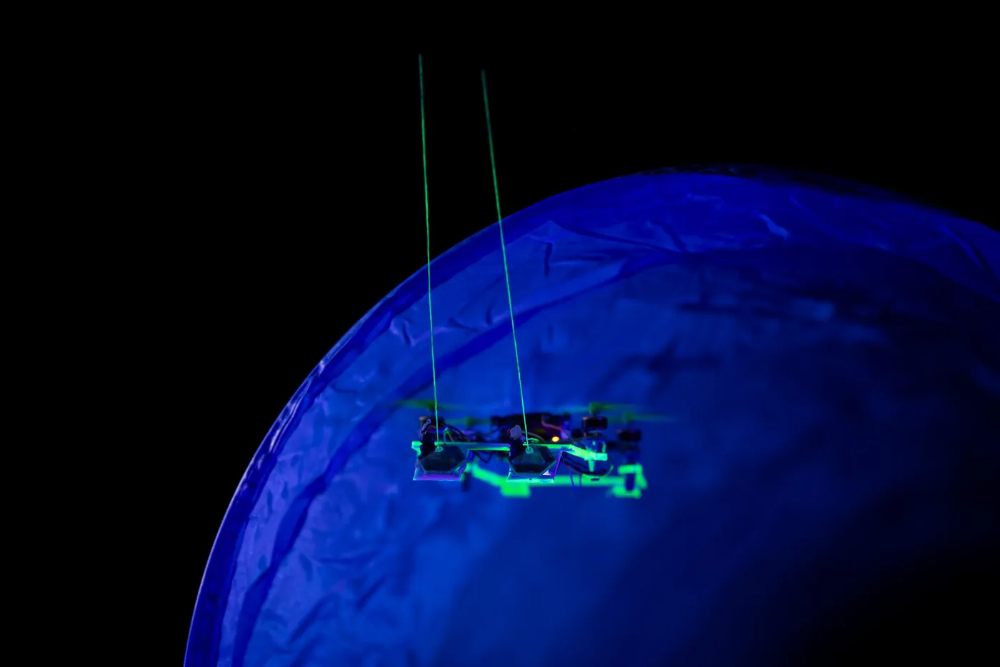

ERC Starting Grant · TU Delft
Drones that feel their way.
Tactile Flight gives flying robots a sense of touch, so they can find their way through darkness, dust and smoke, the places where vision fails.

We still have so much to learn from nature.
Moles, cats and mice can find their way through dark tunnels with ease, even when they cannot see.
But current drones and other mobile robots rely mostly on vision to perceive their surroundings and navigate autonomously. That makes autonomous flight extremely challenging or impossible in darkness, dust or smoke.
Prof. Salua Hamaza, Associate Professor in Aerial Physical Interaction & Embodied Intelligence in Aerial Robots, has been awarded an ERC Starting Grant of €1.62 million to develop a game changer. She will pioneer tactile perception as a new sensing modality for autonomous flight, allowing drones to use touch for navigation in a five-year research programme.
The idea grew out of seven years of experiments.
Read the origins →